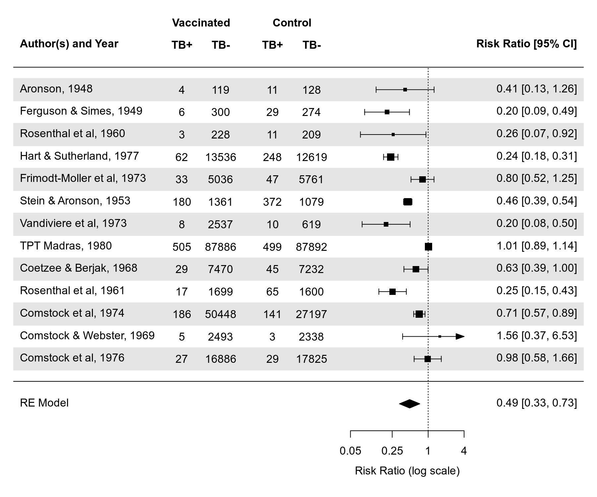
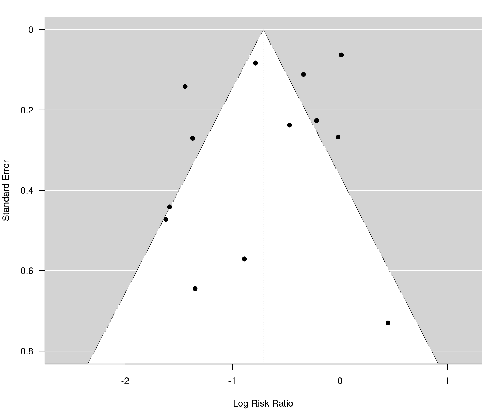
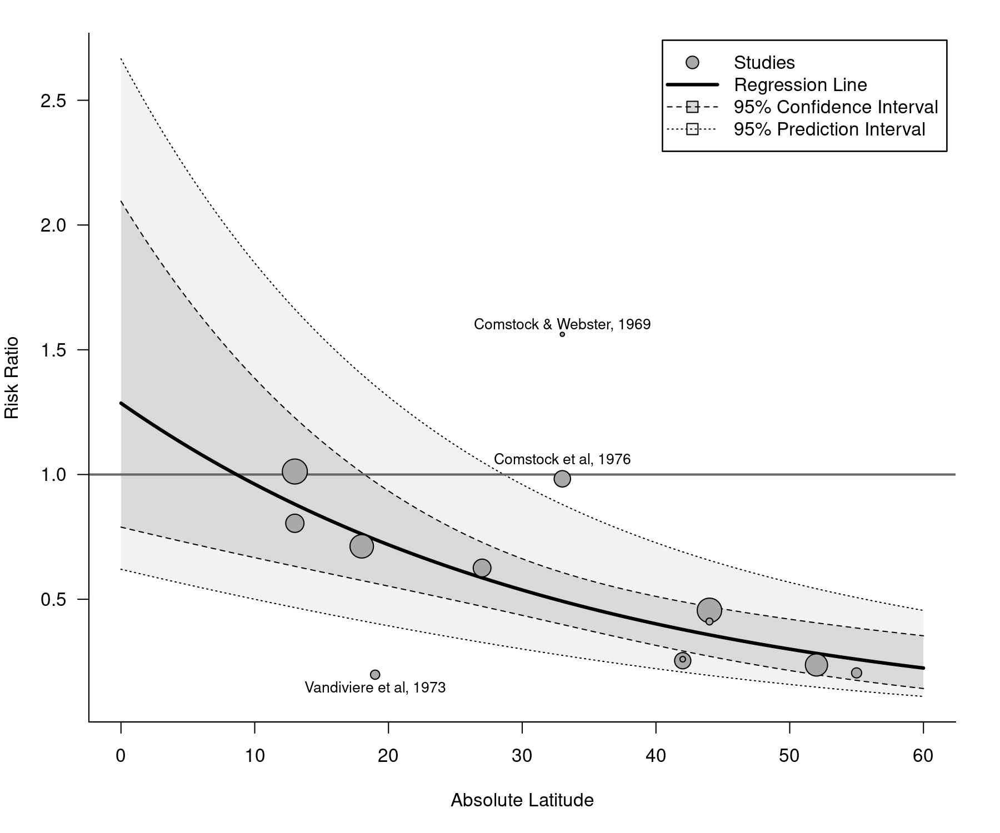

Description
The metafor package is a comprehensive collection of functions for conducting meta-analyses in R. The package includes functions to calculate various effect sizes or outcome measures, fit equal-, fixed-, random-, and mixed-effects models to such data, carry out moderator and meta-regression analyses, and create various types of meta-analytical plots (e.g., forest, funnel, radial, L’Abbé, Baujat, bubble, and GOSH plots). For meta-analyses of binomial and person-time data, the package also provides functions that implement specialized methods, including the Mantel-Haenszel method, Peto’s method, and a variety of suitable generalized linear (mixed-effects) models (i.e., mixed-effects logistic and Poisson regression models). Finally, the package provides functionality for fitting meta-analytic multivariate/multilevel models that account for non-independent sampling errors and/or true effects (e.g., due to the inclusion of multiple treatment studies, multiple endpoints, or other forms of clustering). Network meta-analyses and meta-analyses accounting for known correlation structures (e.g., due to phylogenetic relatedness) can also be conducted.
Package Website
The metafor package website can be found at https://www.metafor-project.org. On the website, you can find:
- some news concerning the package and/or its development,
- a more detailed description of the package features,
- a log of the package updates that have been made over the years,
- a to-do list and a description of planned features to be implemented in the future,
- information on how to download and install the package,
- information on how to obtain documentation and help with using the package,
- some analysis examples that illustrate various models, methods, and techniques,
- a little showcase of plots and figures that can be created with the package,
- some tips and notes that may be useful when working with the package,
- a list of people that have in some shape or form contributed to the development of the package,
- a frequently asked questions section, and
- some links to other websites related to software for meta-analysis.
Documentation
A good starting place for those interested in using the metafor package is the following paper:
Viechtbauer, W. (2010). Conducting meta-analyses in R with the metafor package. Journal of Statistical Software, 36(3), 1-48. https://doi.org/10.18637/jss.v036.i03
In addition to reading the paper, carefully read the package intro and then the help pages for the escalc and the rma.uni functions (or the rma.mh, rma.peto, rma.glmm, rma.mv functions if you intend to use these methods). The help pages for these functions provide links to many additional functions, which can be used after fitting a model. You can also read the entire documentation online at https://wviechtb.github.io/metafor/ (where it is nicely formatted, equations are shown correctly, and the output from all examples is provided).
Installation
The current official (i.e., CRAN) release can be installed within R with:
install.packages("metafor")The development version of the package can be installed with:
install.packages("remotes")
remotes::install_github("wviechtb/metafor")This builds the package from source based on the current version on GitHub.
Example
## trial author year tpos tneg cpos cneg ablat alloc
## 1 1 Aronson 1948 4 119 11 128 44 random
## 2 2 Ferguson & Simes 1949 6 300 29 274 55 random
## 3 3 Rosenthal et al 1960 3 228 11 209 42 random
## 4 4 Hart & Sutherland 1977 62 13536 248 12619 52 random
## 5 5 Frimodt-Moller et al 1973 33 5036 47 5761 13 alternate
## 6 6 Stein & Aronson 1953 180 1361 372 1079 44 alternate
## 7 7 Vandiviere et al 1973 8 2537 10 619 19 random
## 8 8 TPT Madras 1980 505 87886 499 87892 13 random
## 9 9 Coetzee & Berjak 1968 29 7470 45 7232 27 random
## 10 10 Rosenthal et al 1961 17 1699 65 1600 42 systematic
## 11 11 Comstock et al 1974 186 50448 141 27197 18 systematic
## 12 12 Comstock & Webster 1969 5 2493 3 2338 33 systematic
## 13 13 Comstock et al 1976 27 16886 29 17825 33 systematic
# tpos - number of TB positive cases in the treated (vaccinated) group
# tneg - number of TB negative cases in the treated (vaccinated) group
# cpos - number of TB positive cases in the control (non-vaccinated) group
# cneg - number of TB negative cases in the control (non-vaccinated) group
#
# these variables denote the values in 2x2 tables of the form:
#
# TB+ TB-
# +------+------+
# treated | tpos | tneg |
# +------+------+
# control | cpos | cneg |
# +------+------+
#
# year - publication year of the study
# ablat - absolute latitude of the study location (in degrees)
# alloc - method of treatment allocation (random, alternate, or systematic assignment)
# calculate log risk ratios and corresponding sampling variances for the BCG vaccine dataset
dat <- escalc(measure="RR", ai=tpos, bi=tneg, ci=cpos, di=cneg, data=dat.bcg,
slab=paste(author, year, sep=", ")) # also add study labels
dat## trial author year tpos tneg cpos cneg ablat alloc yi vi
## 1 1 Aronson 1948 4 119 11 128 44 random -0.8893 0.3256
## 2 2 Ferguson & Simes 1949 6 300 29 274 55 random -1.5854 0.1946
## 3 3 Rosenthal et al 1960 3 228 11 209 42 random -1.3481 0.4154
## 4 4 Hart & Sutherland 1977 62 13536 248 12619 52 random -1.4416 0.0200
## 5 5 Frimodt-Moller et al 1973 33 5036 47 5761 13 alternate -0.2175 0.0512
## 6 6 Stein & Aronson 1953 180 1361 372 1079 44 alternate -0.7861 0.0069
## 7 7 Vandiviere et al 1973 8 2537 10 619 19 random -1.6209 0.2230
## 8 8 TPT Madras 1980 505 87886 499 87892 13 random 0.0120 0.0040
## 9 9 Coetzee & Berjak 1968 29 7470 45 7232 27 random -0.4694 0.0564
## 10 10 Rosenthal et al 1961 17 1699 65 1600 42 systematic -1.3713 0.0730
## 11 11 Comstock et al 1974 186 50448 141 27197 18 systematic -0.3394 0.0124
## 12 12 Comstock & Webster 1969 5 2493 3 2338 33 systematic 0.4459 0.5325
## 13 13 Comstock et al 1976 27 16886 29 17825 33 systematic -0.0173 0.0714
# fit random-effects model
res <- rma(yi, vi, data=dat, test="knha")
res## Random-Effects Model (k = 13; tau^2 estimator: REML)
##
## tau^2 (estimated amount of total heterogeneity): 0.3132 (SE = 0.1664)
## tau (square root of estimated tau^2 value): 0.5597
## I^2 (total heterogeneity / total variability): 92.22%
## H^2 (total variability / sampling variability): 12.86
##
## Test for Heterogeneity:
## Q(df = 12) = 152.2330, p-val < .0001
##
## Model Results:
##
## estimate se tval df pval ci.lb ci.ub
## -0.7145 0.1808 -3.9522 12 0.0019 -1.1084 -0.3206 **
##
## ---
## Signif. codes: 0 '***' 0.001 '**' 0.01 '*' 0.05 '.' 0.1 ' ' 1
# predicted pooled risk ratio (with 95% confidence/prediction intervals)
predict(res, transf=exp, digits=2)## pred ci.lb ci.ub pi.lb pi.ub
## 0.49 0.33 0.73 0.14 1.76
# forest plot
forest(res, atransf=exp, at=log(c(.05, .25, 1, 4)), xlim=c(-16,6),
ilab=cbind(tpos, tneg, cpos, cneg), ilab.xpos=c(-9.5,-8,-6,-4.5),
header="Author(s) and Year")
text(c(-9.5,-8,-6,-4.5), 15, c("TB+", "TB-", "TB+", "TB-"), font=2)
text(c(-8.75,-5.25), 16, c("Vaccinated", "Control"), font=2)

# regression test for funnel plot asymmetry
regtest(res)## Regression Test for Funnel Plot Asymmetry
##
## Model: mixed-effects meta-regression model
## Predictor: standard error
##
## Test for Funnel Plot Asymmetry: t = -0.7812, df = 11, p = 0.4512
## Limit Estimate (as sei -> 0): b = -0.5104 (CI: -1.2123, 0.1915)
# mixed-effects meta-regression model with absolute latitude as moderator
res <- rma(yi, vi, mods = ~ ablat, data=dat, test="knha")
res## Mixed-Effects Model (k = 13; tau^2 estimator: REML)
##
## tau^2 (estimated amount of residual heterogeneity): 0.0764 (SE = 0.0591)
## tau (square root of estimated tau^2 value): 0.2763
## I^2 (residual heterogeneity / unaccounted variability): 68.39%
## H^2 (unaccounted variability / sampling variability): 3.16
## R^2 (amount of heterogeneity accounted for): 75.62%
##
## Test for Residual Heterogeneity:
## QE(df = 11) = 30.7331, p-val = 0.0012
##
## Test of Moderators (coefficient 2):
## F(df1 = 1, df2 = 11) = 12.5905, p-val = 0.0046
##
## Model Results:
##
## estimate se tval df pval ci.lb ci.ub
## intrcpt 0.2515 0.2839 0.8857 11 0.3948 -0.3735 0.8764
## ablat -0.0291 0.0082 -3.5483 11 0.0046 -0.0472 -0.0111 **
##
## ---
## Signif. codes: 0 '***' 0.001 '**' 0.01 '*' 0.05 '.' 0.1 ' ' 1
# bubble plot (with points outside of the prediction interval labeled)
regplot(res, mod="ablat", pi=TRUE, xlab="Absolute Latitude",
xlim=c(0,60), predlim=c(0,60), transf=exp, refline=1, legend=TRUE,
label="piout", labsize=0.9, bty="l", las=1, digits=1)
Meta
The metafor package was written by Wolfgang Viechtbauer. It is licensed under the GNU General Public License. For citation info, type citation(package='metafor') in R. To report any issues or bugs or to suggest enhancements to the package, please go here.